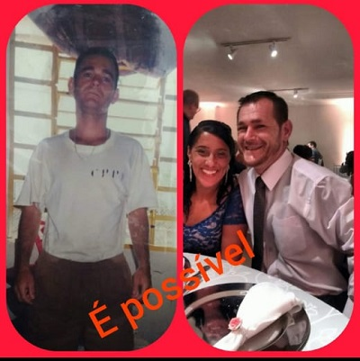

Meu nome é Vanderlei Fischer, nunca fui uma pessoa má... Porem na juventude, como muitos jovens, dei um mau
passo uma escolha errada que me levou a PRISÃO por longos sete anos... Ali vi e vivi coisas que jamais
esquecerei e que me mudaram para ser quem sou hoje.
Sei da realidade lá dentro e das causas que levam muitos lá e garanto a vocês: Se nos unirmos e nos
ajudarmos, podemos mudar essa triste realidade em que hoje vivemos... Não adianta só críticas; precisamos
agir para mudar...Por isso estou aqui, hoje.
Estou há dezesseis anos em liberdade, com ajuda da minha família e muita força de vontade e muita luta, hoje
sou um MICROEMPREENDEDOR INDIVIDUAL. Trabalho honestamente para dar uma dignidade para minha família e sinto
vergonha do meu passado, porém não consigo fugir do projeto que DEUS me confiou no ano 2000 quando estava
preso na CASA DE DETENÇÃO CARANDIRU a ONG “União” dos excluídos, denominada ONG X e hoje estou aqui
garantindo e pedindo a todos um voto de confiança, em mim e naqueles que também erraram um dia na vida, mas
merecem uma segunda chance, para o bem deles e da sociedade também.
Se quiserem conhecer mais da minha história e trajetória de vida e da minha reintegração, assim como a de
outros ex detentos, procurem meu canal no Youtube:
TANTOSDIASDEDETENÇÃO, lá vocês verão que não são tão monstros quanto a mídia mostra, pelo contrário são
pessoas que precisam de uma mão amiga para recuperar sua dignidade e sua humanidade.
Se você também acredita na recuperação do ser humano e em um Brasil mais justo nos ajude a cobrar das
autoridades, não regalias, mas que se cumpra a lei da RESSOCIALIZAÇÃO levando aos detentos trabalho e cursos
profissionalizantes.
Com certeza isso está no coração de Jesus
